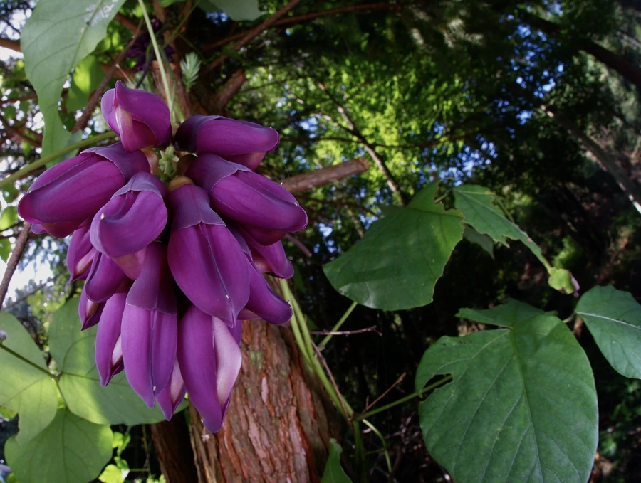

花卉与草本 · 植物界
常春油麻藤 Mucuna sempervirens

豆科黧豆属常绿木质藤本，花冠深紫至紫黑色、形似雀鸟，四季常青，是南方棚架与护坡的优良藤本。
- 分类
- 门被子植物门纲木兰纲目豆目科豆科属黧豆属
- 栖息环境
- 山地林缘、沟谷与溪边，喜温暖湿润、半阴环境
- 地理分布
- 中国南方及日本；华南、西南各地常见栽培
- 保护级别
- IUCN 暂无评估；分布较广，野生种群稳定
物种志
常春油麻藤为常绿木质藤本，蔓长可达 15 米，茎粗壮，老茎常扭转成绳索状。叶为三出复叶，小叶革质，卵状椭圆形，长 7–15 厘米。总状花序下垂，花冠深紫色至紫黑色，长 5–6 厘米，形似雀鸟，花萼密被毛，气味特殊；荚果长条形，长 30–60 厘米，密被锈色毛，种子扁圆。
本种分布于中国南方及日本，生于山地林缘与沟谷，喜温暖湿润、半阴的环境，四季常青，是南方棚架、护坡与林下绿化的优良藤本。它花形奇特、花色深沉，花期 4–5 月，常与禾雀花搭配种植。常春油麻藤生长迅速、覆盖力强，可用于裸露坡面的生态修复；其种子含左旋多巴等有毒成分，不可食用。栽培时需设坚固棚架，并控制其攀援范围。
形态与习性
- 蔓长可达 15 米，老茎扭转呈绳索状
- 花期4–5 月，花深紫至紫黑色
- 果期9–11 月，荚果长 30–60 厘米
- 光照喜半阴，也耐一定直射光
- 水分喜湿润，耐短期水湿
- 土壤深厚肥沃的酸性壤土
- 主要用途棚架遮阴、护坡绿化与生态修复
趣味知识
- 常春油麻藤四季常青，是少数能在南方露地越冬的木质藤本之一。
- 它的花深紫近黑，形似雀鸟，开花时成串下垂，颇具神秘感。
- 常春油麻藤的茎可长到碗口粗，攀援时能把整个棚架完全覆盖。
- 它的种子含左旋多巴类物质，不可食用，只能用于药用提取。